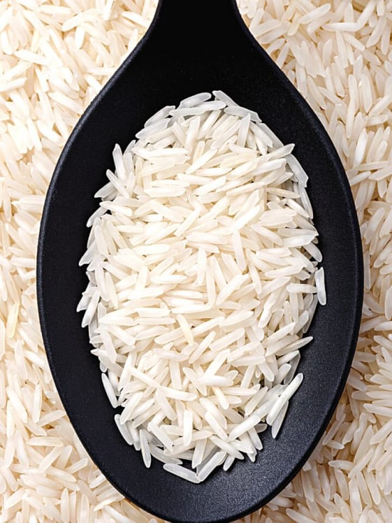
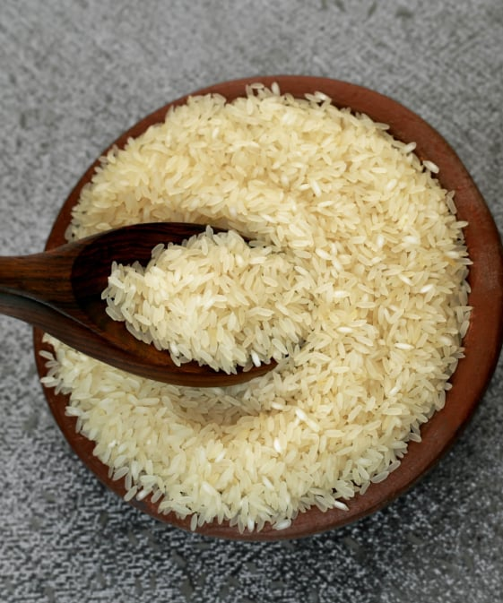
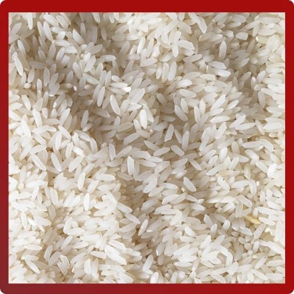

Rice

Basmati
Basmati rice is an aromatic long grain rice originating from those regions surrounding the foothills of the Himalayas in India. When cooked, the grains grow considerably in length but not in width giving long, slender grains which are not sticky and are characterised by a light aroma.

Ponni Rice
Ponni Rice is a medium grain, non-aromatic rice, grown primarily in the Indian states of Andhra Pradesh and Karnataka. It has a fluffy and slightly starchy quality; this allows the rice to be light on the stomach. In contrast to basmati rice which separates well, Ponni and Sona Masoori has a somewhat sticky quality.

Sona Masoori
Sona Masoori is a medium grain, non-aromatic rice, grown primarily in the Indian states of Andhra Pradesh and Karnataka. It has a fluffy and slightly starchy quality; this allows the rice to be light on the stomach. In contrast to basmati rice which separates well, Ponni and Sona Masoori has a somewhat sticky quality.

Seerga Samba Rice
Seeraga Samba rice, also known as Jeera Samba, is a heritage short-grain rice variety from Tamil Nadu, India. It is cherished for its delicate aroma, unique grain shape, and ability to soak up rich masalas, making it the preferred choice for South Indian biryanis.